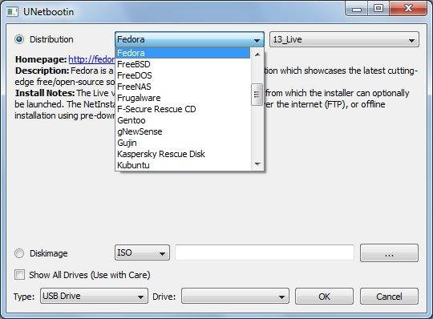
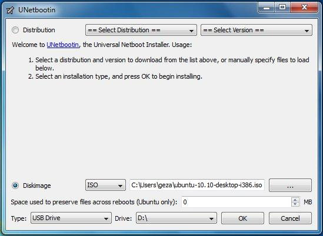
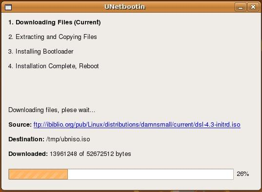

UNetbootin
 Download
Download Download
DownloadUNetbootin allows you to create bootable Live USB drives for Ubuntu and other Linux distributions without burning a CD.
You can either let UNetbootin download one of the many distributions supported out-of-the-box for you, or supply your own Linux .iso file.
Features
UNetbootin can create a bootable Live USB drive
It loads distributions either by downloading a ISO (CD image) files for you, or by using an ISO file you've already downloaded.

Using
Select an ISO file or a distribution to download, select a target drive (USB Drive or Hard Disk), then reboot once done. If your USB drive doesn't show up, reformat it as FAT32.



If you used the "USB Drive" install mode: After rebooting, boot from the USB drive. On PCs, this usually involves pressing a button such as Esc or F12 immediately after you turn on your computer, while on Macs, you should hold the Option key before OSX boots.
If you used the "Hard Disk" install mode: After rebooting, select the UNetbootin entry from the Windows Boot Menu.
Supported Distributions
UNetbootin has built-in support for automatically downloading and loading the following distributions, though installing other distributions is also supported:
UNetbootin can also be used to load various system utilities, including:
Installing Other Distributions Using UNetbootinDownload and run UNetbootin, then select the "disk image" option and supply it with an ISO (CD image).

UNetbootin doesn't use distribution-specific rules for making your live USB drive, so most Linux ISO files should load correctly using this option. However, not all distributions support booting from USB, and some others require extra boot options or other modifications before they can boot from USB drives, so these ISO files will not work as-is. Also, ISO files for non-Linux operating systems have a different boot mechanism, so don't expect them to work either.
FAQs
Distribution X isn't on the list of supported distributions, will it work?
» Maybe, see Installing Other Distributions Using UNetbootin.
UNetbootin isn't able to download the distribution, what should I do?
Download the ISO straight from the website, then provide it to UNetbootin via the diskimage option.
My USB stick isn't booting, what should I do?
Reformat the USB drive as FAT32, then use UNetbootin again to put your distribution on the USB stick.
My USB stick/hard drive isn't detected, what should I do?
Reformat the USB drive as FAT32, then use UNetbootin again. If it still isn't showing up, use the targetdrive command line option.
How do I use UNetbootin from the command line?
» See UNetbootin Command Line Options.
How does UNetbootin work, and what does it do?
» See How UNetbootin Works.
» See USB Drive and Hard Disk Install Modes.
Where can I report bugs, submit patches, etc?
First, make sure you are using the latest version available on this website.
» See Github Issues to file a bug report.
» See Github Pull Requests to submit a patch.
Does UNetbootin have any spyware, viruses, trojans, or other malware?
No; though some anti-virus products (Kaspersky) raise "Trojan.generic" warnings due to the auto-uninstall feature, these are false positives. Just make sure you obtain UNetbootin from the official downloads page on Sourceforge not some shady third-party source. If you're absolutely paranoid, you can check the source code and compile it yourself.


A number of translations are included in the latest UNetbootin release. See the Translations Page for the status of each.
If a translation corresponding to your system's native language has already been included into UNetbootin, it should automatically load the corresponding translation. Alternatively, you can force the language to use via the lang=es command-line option, where you substitute es with the the 2-letter ISO 639-1 code for your language.
If you'd like to contribute a translation, please use Launchpad Translations. If you are new to Launchpad, you will first have to join the corresponding Ubuntu Translators group for the language you intend to translate. For information on using the Launchpad Translations system, see the translations help page.
» See UNetbootin Translations
Removal Instructions (Applicable only to Hard Disk installs)
If using Windows, UNetbootin should prompt you to remove it the next time you boot into Windows. Alternatively, you can remove it via Add/Remove Programs in the Control Panel.
If using Linux, re-run the UNetbootin executable (with root priveledges), and press OK when prompted to uninstall.
Removal is only required if you used the "Hard Drive" installation mode; to remove the bootloader from a USB drive, back up its contents and reformat it.
Uninstalling UNetbootin simply removes the UNetbootin entry from your boot menu; if you installed an operating system to a partition using UNetbootin, removing UNetbootin will not remove the OS.
To manually remove a Linux installation, you will have to restore the Windows bootloader using "fixmbr" from a recovery CD, and use Parted Magic to delete the Linux partition and expand the Windows partition.
Where's the source code, and how can I compile or modify it?
Source code is on Github, though you may prefer a tarball.
» See Compiling UNetbootin.
» See UNetbootin Command Line Options.
» See Building a UNetbootin Plugin.
» See Using a UNetbootin Plugin.
» See Building a Custom UNetbootin Version.
» See List of Custom UNetbootin Versions and Plugins.
License
UNetbootin was created and written by Geza Kovacs (Github: gkovacs, Launchpad: gezakovacs, contact info).
Translators are listed on the translations page.
UNetbootin is licensed under the GNU General Public License (GPL) Version 2 or above. Site materials, documentation, screenshots, and logos are licensed as Creative Commons Attribution-Share-Alike 3.0.